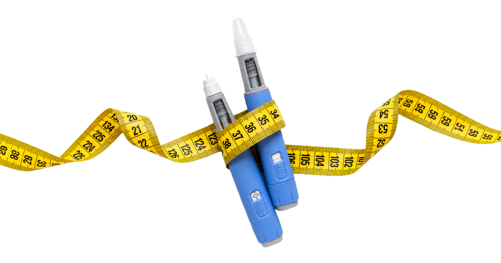
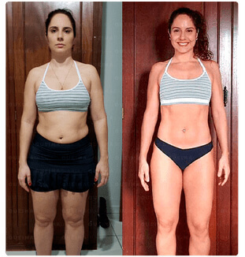
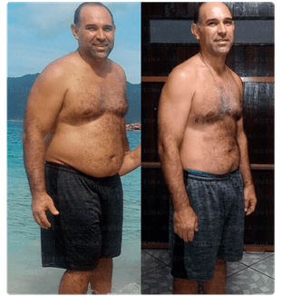
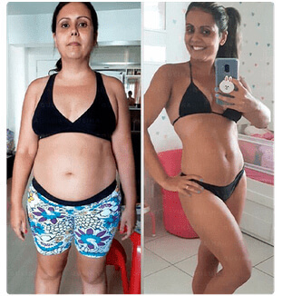
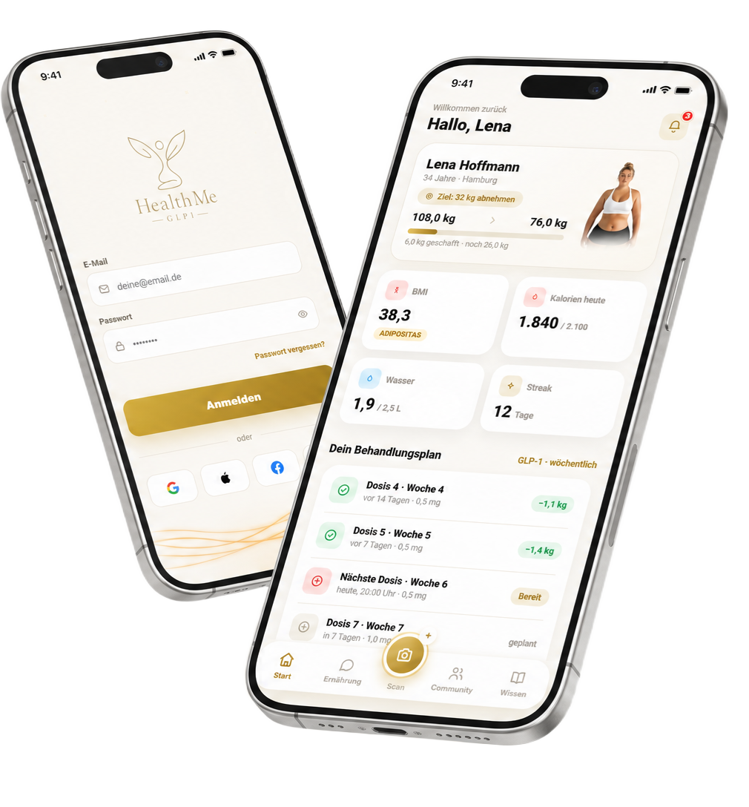

GLP-1-Spritzen ohne Tracking = Schlaffe Haut + Nebenwirkungen + Ergebnisse, die nicht halten
Verfolge deine Dosen, Nährstoffe und Fortschritte an einem einzigen Ort. Endlich volle Kontrolle über deine GLP-1-Behandlung.


Verfolge deine Dosen, Nährstoffe und Fortschritte an einem einzigen Ort. Endlich volle Kontrolle über deine GLP-1-Behandlung.


-12 kg"Ich habe ständig die Dosis vergessen und wusste nicht einmal, ob ich abnehme. Mit der App habe ich endlich die Kontrolle über meine Behandlung — schon 12 kg weniger und ganz ohne Jo-Jo-Effekt."
Renatha Almeida, 34 ✓ Verifiziert

Echtes Ergebnis"Die Dosis- und Wasser-Erinnerungen haben alles verändert. Ich habe angefangen, meine Makros genau einzuhalten, und die Übelkeit hat stark nachgelassen. Heute weiß ich genau, wo ich in der Behandlung stehe."
Orlei P., 47 ✓ Verifiziert

-20 kg"Meinen Fortschritt mit Fotos und Diagrammen zu verfolgen, motiviert mich jeden Tag. Ich habe 20 kg verloren und habe zum ersten Mal das Gefühl, dass sich jede Spritze lohnt."
Fernanda Costa, 39 ✓ Verifiziert
Und genau das bietet dir HealthMe:
Vergiss nie wieder deine Spritze.
Bleib jeden Tag gut hydriert.
Fotos vom Beginn der Behandlung an.
Kalorien, Proteine, Kohlenhydrate und Ballaststoffe.
Antworten auf all deine Fragen.
Sieh, wie sich deine Ergebnisse entwickeln.

Alles an einem einzigen Ort. Alles organisiert. Alles unter Kontrolle.
Starte jetzt deinen Plan und übernimm die Kontrolle, die du verdienst.
JETZT MEINEN PLAN STARTENVerfolge Dosen, Nährstoffe und Fortschritte an einem einzigen Ort — und hol das Maximum aus jedem Ergebnis heraus.
JETZT MEINEN PLAN STARTEN